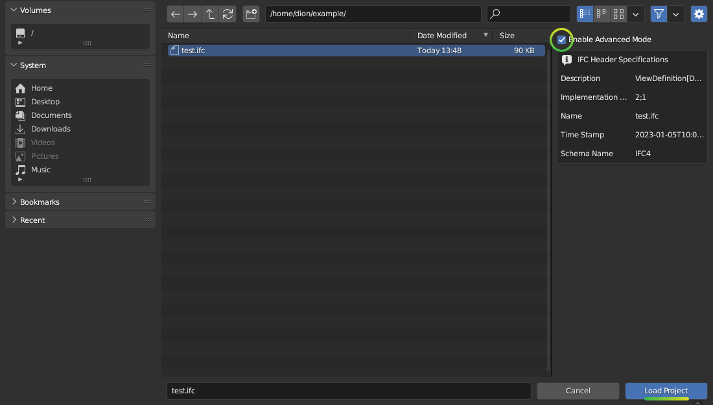

Dealing with large models¶
Bonsai can handle large models, or federated collections of models where the combined total IFCs may be many gigabytes or object counts may be in the hundreds of thousands.
Models may be large in terms of different metrics, such as:
Filesizes over 750MB, which may cause memory issues
Individual object polygon counts over 100k, which may cause unreasonable loading times
Objects having excessive or low quality booleans, which may cause unreasonable loading times
Number of elements exceeding 50,000 loaded in the scene, which may cause unreasonable loading times, selection glitches, and viewport lagging
There are always solutions to all of these, but an understanding of the type of size limitation you are up against will always help.
Linking in models¶
Bonsai defaults to authoring IFCs. This allows full editing and inspection of all element properties and relationships. However, sometimes only geometry and basic attributes such as names are sufficient. Example usecases include CG visualisation, overall federated model coordination, or pure geometric checks.
For these usecases, it’s much more efficient to link a model rather than to open a model. In the Links Panel, click on Link IFC, and browse to your IFC. You can also bulk select multiple IFCs.
You will not be able to directly edit geometry or data in a linked model, but you will be able to efficiently load multiple huge models easily and navigate it with a reasonable FPS.
Activate the Explore Tool to quickly navigate these linked models. You can Enable Culling to improve FPS speeds further, and use the RMB to query data about a selected object.
Once loaded, the linked model is cached as a .cache.blend file for
subsequent loads in the same folder as the .ifc. The data is cached in a
.cache.sqlite file.
Large filesizes¶
The first priority is to ensure you do not have a prohibitively large filesize.
Use IFC4. It can handle geometry much more efficiently and expect your filesize to drop significantly.
When coming from other software, ensure you are exporting solids, not faceted BReps or tessellations where appropriate. Choosing the wrong export setting can easily double or triple your filesize and export times. Choose Design Transfer View instead of Coordination View or Reference View. Look for export settings that use the keywords like “surface”, “solid”, “brep”, “tessellation”, or “extrusion”.
Improve your model breakdown strategy (see below)
Identify objects with large polygon counts and improve the modeling (see below)
Model breakdown strategies¶
A good general strategy is to never have a large model to begin with. Breaking down models is critical for usability during design and coordination. Where full models are needed, such as during clash detection, review meetings, or client handover, many small models may be federated. Model breakdown strategies include:
By discipline, you probably already do this, so let’s move on
By location, such as by building, floor, zone, mid-rise, high-rise, core podium, underground, plant rooms, facade orientation, or similar.
By object type, such as by primary structural elements vs accessories (plates, bolts, etc), furniture vs general arrangement, facade vs interiors, distribution system elements (equipment, pipes, fittings) vs accessories (pipe clamps, hangers, etc) or similar.
By coordination task, many people get into the habit of exchanging the entire building when a task only requires a tiny portion of it. Think of the workflow of exchanging traditional drawings. A large project would have thousands of drawings with a few drawings exchanged for a single coordination task. This strategy can be used with models: exchange hundreds of tiny models (some maybe even only 1MB!), scoped to the task at hand. Keep exchanges small and frequent (like code commits, for the geeks reading this).
Filtered model loading¶
You may filter elements and only load a portion of the model. Click on Enable Advanced Mode checkbox when loading a model.
This will preload the model and present you with model loading options in the Project Info panel.

Filter Modes include:
Decomposition, filter by location in the building, such as Level 1 or Building A.
IFC Class, filter by IFC class, such as Wall, Column, or Pipe Segments
IFC Type, filter by IFC construction type, such as Copper pipes and 200mm thick concrete slabs
Whitelist or Blacklist, filter by a custom query
When Whitelist or Blacklist is chosen, you may type a custom query to filter by attributes, properties, location, and so on.
Large polygon counts¶
If objects with large polygon counts are blocking you from importing, consider enabling Native Meshes in the Advanced Loading Mode when loading projects.
The Debug Panel allows you to Select High Polygon Meshes or Select Highest Polygon Meshes to isolate geometrically complex objects by a polygon number threshold or a percentage.
After selecting these elements, you can view them in edit mode to see a polygon count and where the offending polygons are. Often, fixing a single object may cut out 50MB.
Excessive or low quality booleans¶
In some cases, elements may be generated from external software with an excessive (over 50) number of boolean operations or with high polygon, complex booleans.
The IFC Debug panel has a Test All Shapes feature which generates geometry for every element one by one and outputs the processing time to the console. When you see it stuck on an element, make a note of the element ID. You may then use the IFC Debug panel’s Inspector to determine the nature of the boolean, or create a Blacklist Filter Mode to exclude the element from import.
These types of errors are usually problems with external software (i.e. not intentionally by the end-user) and typically do not affect critical geometry and can be worked around.
Fully resolving boolean issues is a complex case by case topic and not covered here.
High number of elements¶
Click on Enable Advanced Mode when loading a model and you will be presented with model loading options in the Project Info panel.
You may specify an Element Range to process. The Element Offset says the first element to start processing at, and the Element Limit says how many elements should be processed. For example, in a model with 100,000 objects, an Element Start of 30,000 and an Element Limit of 20,000 will process the elements starting at item number 30,000 and ending at item number 50,000. This allows you to arbitrarily break down large models into submodels. This can be combined with other filters.
Using Blender 3.3 and above will result in a faster load time (~50%) compared to older Blender versions.
Processing models headlessly¶
You can automate model processing using this command (~5% speedup):
blender -b -P headless_import.py
The headless_import.py script contains instructions on how to configure
model loading settings.